Layered Platform Architecture
The architecture separates source acquisition, immutable raw storage, reusable dimensions, curated subject data, subject-area marts and downstream analytics while allowing selected raw and curated datasets to support direct analytical work where appropriate.
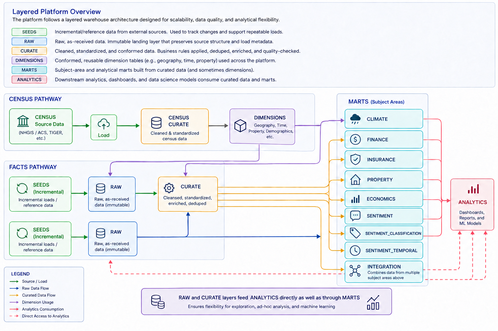
Platform Workflow
High-level platform flow showing the Census pathway, the fact-data pathway, subject-area marts and downstream analytics consumption.
Schema Structure
Representative PostgreSQL schema views showing how the physical implementation maps to the layered architecture.
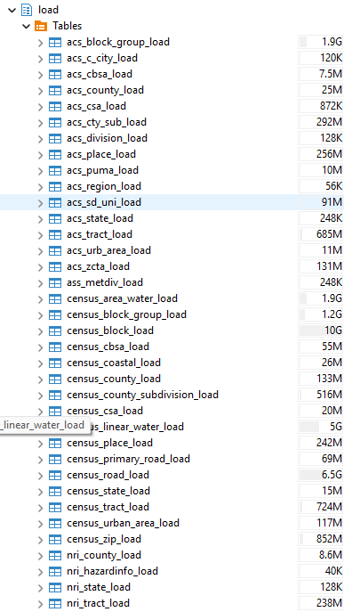
load
Landing and preparation layer used heavily for Census and related source structures before downstream conforming and dimensional modeling.
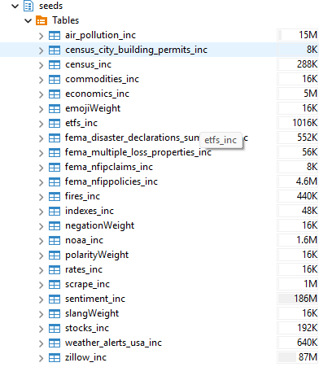
seeds
Incremental and reference datasets used to capture source changes and support repeatable loading into the raw layer.
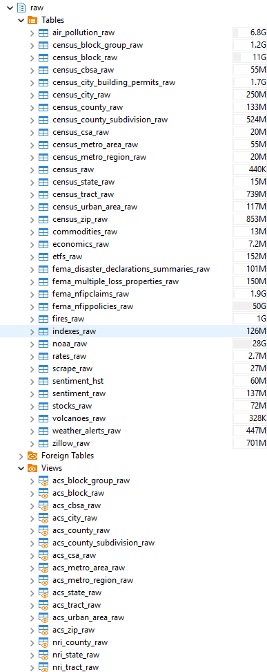
raw
Source-aligned landing tables that preserve incoming data before downstream cleaning, standardization and modeling.
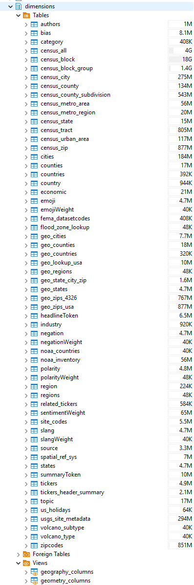
dimensions
Reusable geographic, Census, lookup and descriptive dimensions shared across subject areas and analytical models.
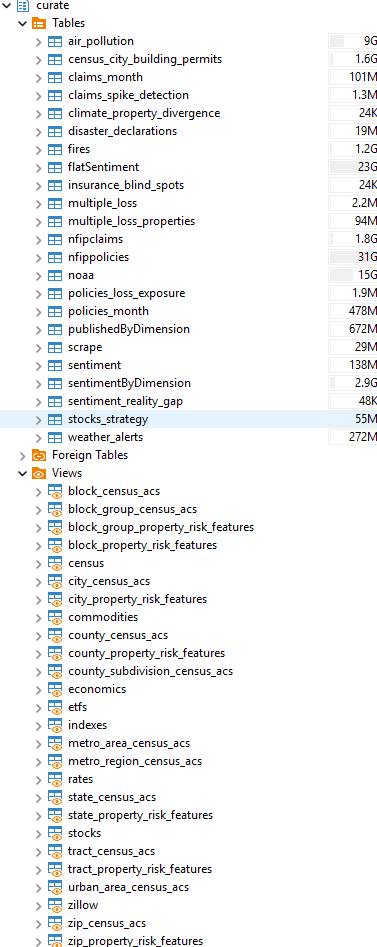
curate
Cleaned, standardized and enriched subject-area tables and views prepared for reuse in analytical models.
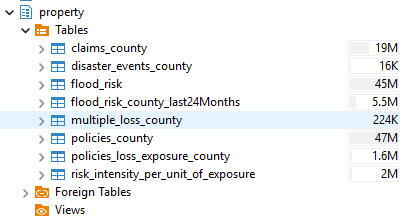
property
Property-focused analytical tables combining claims, disasters, flood risk, policies, loss exposure and related measures.
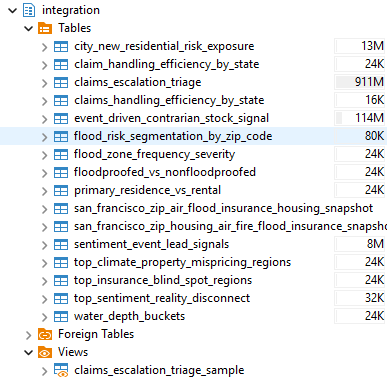
integration
Cross-domain analytical models that combine multiple curated subject areas into business-facing marts and integrated risk, claims, market and geographic outputs.
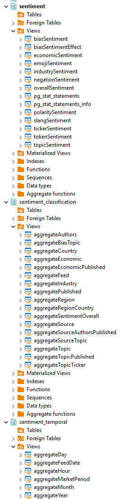
sentiment / sentiment_classification / sentiment_temporal
Sentiment-focused structures covering tokenized views, aggregated sentiment outputs, classification groupings and temporal rollups.
Query-Based Integration Diagrams
These diagrams were mapped from actual SQL logic to show how selected models are built from curated datasets, transformations and joins.
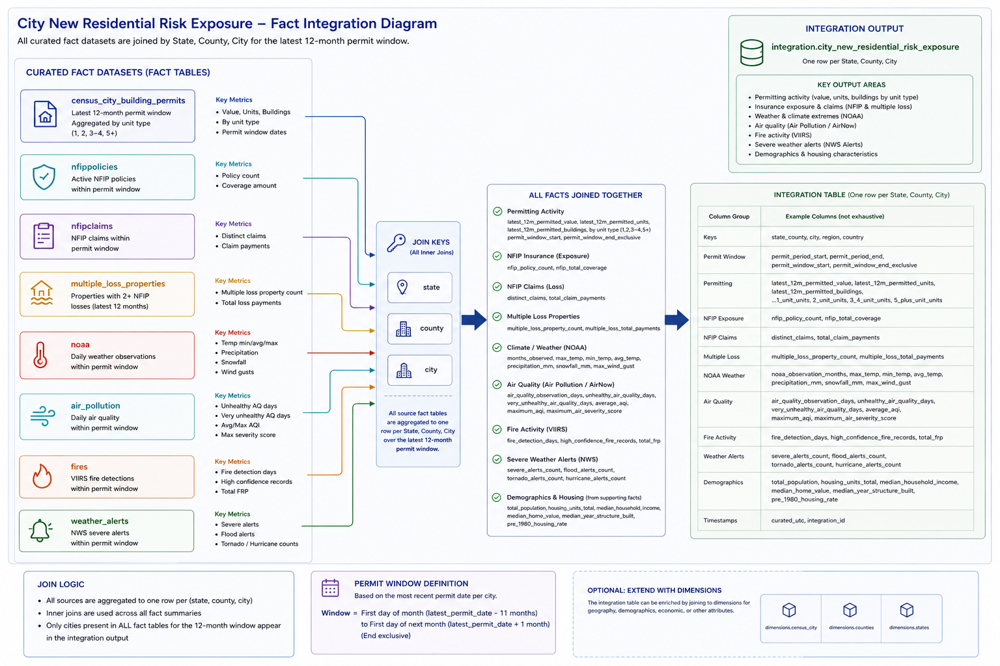
integration.city_new_residential_risk_exposure
Cross-dataset fact integration showing how permits, air pollution, NOAA, fires, weather alerts, multiple loss properties, NFIP claims and NFIP policies are aggregated and joined by state, county and city within the latest 12-month permit window.
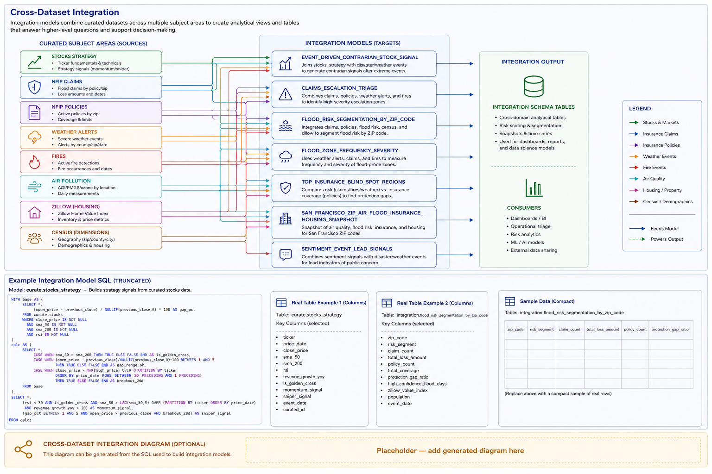
curate.stocks_strategy
Strategy-building flow showing source stock data, calculation steps, rule evaluation and final output flags for momentum and sniper signals.
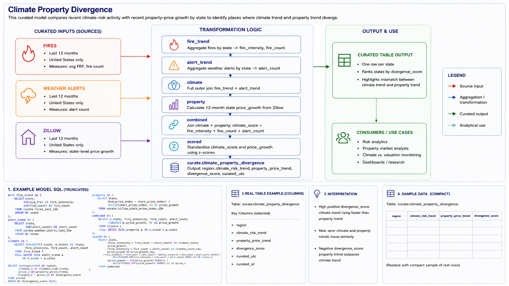
curate.climate_property_divergence
Joined model showing how fire activity, weather alerts and Zillow property trends are standardized and compared to produce state-level divergence scoring.
Representative Analytical Tables
Representative metadata from two integrated analytical models. The tables show the physical column structure and PostgreSQL data types behind the analytical outputs.
Sample Data
Current representative records from integration.city_new_residential_risk_exposure. Data is retrieved directly from PostgreSQL when this page is generated.
City New Residential Risk Exposure
Selected records showing demographic, housing, permit, environmental, insurance and loss information within the same analytical model.
| data_through_date | refreshed_utc | state | county | city | total_population | median_home_value | latest_12m_permitted_value | unhealthy_air_quality_days | fire_detection_days | severe_weather_alert_count | multiple_loss_property_count | nfip_claim_count | latest_12m_policy_count | recent_climate_hazard_indicator_count |
|---|---|---|---|---|---|---|---|---|---|---|---|---|---|---|
| 2026-08-01 | 2026-08-24 21:31 UTC | Arkansas | Lonoke | Carlisle | 1,040 | 131,100 | 420,000 | 0 | 0 | 0 | 18 | 1 | 5 | 0 |
| 2026-08-01 | 2026-08-24 21:31 UTC | Arkansas | Lonoke | Lonoke | 2,270 | 211,900 | 4,749,717 | 0 | 0 | 0 | 21 | 1 | 2 | 0 |
| 2026-08-01 | 2026-08-24 21:31 UTC | Florida | Citrus | Crystal River | 14 | 264,200 | 10,402,272 | 0 | 1 | 0 | 1,250 | 1 | 94 | 1 |
| 2026-08-01 | 2026-08-24 21:31 UTC | Florida | Duval | Jacksonville | 384 | 563,200 | 536,133,378 | 0 | 1 | 0 | 639 | 23 | 21,080 | 12 |
| 2026-08-01 | 2026-08-24 21:31 UTC | Florida | Hillsborough | Tampa | 65 | 1,370,400 | 1,062,472,761 | 2 | 0 | 0 | 840 | 14 | 43,500 | 8 |
| 2026-08-01 | 2026-08-24 21:31 UTC | Florida | Polk | Lakeland | 114 | 541,700 | 121,419,561 | 0 | 1 | 0 | 310 | 0 | 1,356 | 8 |
| 2026-08-01 | 2026-08-24 21:31 UTC | Georgia | Fulton | Atlanta | 228 | 473,200 | 871,003,261 | 8 | 0 | 0 | 365 | 12 | 2,698 | 15 |
| 2026-08-01 | 2026-08-24 21:31 UTC | Indiana | Floyd | New Albany | 82 | 184,100 | 8,768,585 | 0 | 0 | 0 | 38 | 0 | 158 | 0 |
| 2026-08-01 | 2026-08-24 21:31 UTC | Indiana | Vigo | Terre Haute | 30 | 171,300 | 121,809,812 | 0 | 0 | 0 | 45 | 1 | 472 | 7 |
| 2026-08-01 | 2026-08-24 21:31 UTC | Kentucky | Daviess | Owensboro | 52 | 292,900 | 27,077,172 | 0 | 0 | 0 | 43 | 0 | 180 | 6 |